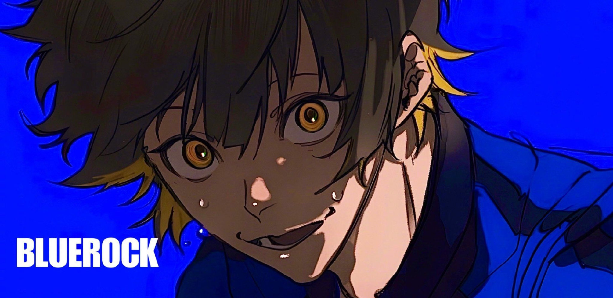
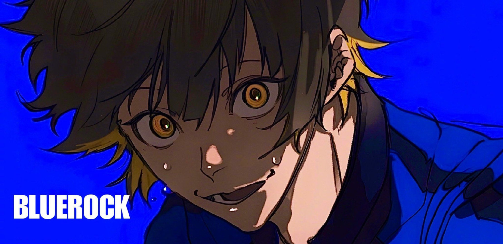
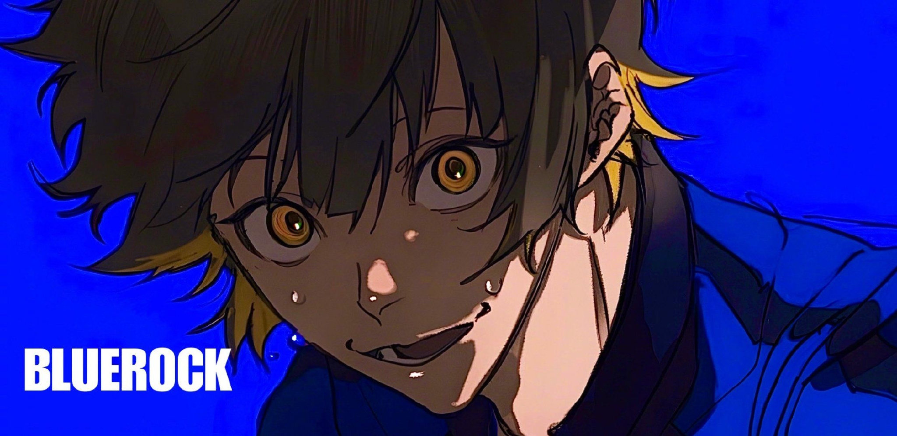

蜂乐回
日本漫画《蓝色监狱》及其衍生作品中的主角

日本漫画《蓝色监狱》及其衍生作品中的主角
蜂乐回，男，野村优介创作的漫画《蓝色监狱》及其衍生作品中的角色。
蜂乐回，一位拥有独特感性与我行我素性格的足球天才，因对足球的无限热爱与独特理解而加入蓝色监狱，旨在寻找能共鸣其足球灵魂的伙伴，共同追求足球的极致乐趣。
拥有独特感性，我行我素的性格。喜欢以品味出众的运球为武器，自由奔放的足球风
格。入宿考试的时候，对在同一个Team Z相遇的洁抱有强烈的兴趣，之后成为了互相很好的理解者。
家里是单亲家庭，和画家妈妈两个人一起生活。虽然从未收到过圣诞老人的礼物，但是每年圣诞节妈妈都会烤很好吃的松饼给回吃。
廻从小就非常喜欢足球，无论白天黑夜、睡觉还是醒着，都在踢球中度过。廻尤其喜
欢盘带，从小就展现出了过人的天赋，甚至会感觉到足球和自己融为一体，认为“世界上
没有踢足球更开心的事情了”。小时候踢足球时，廻曾劝说同伴们一起与足球融为一体，
这样就能踢得很厉害了。然而同伴们并不认可廻的想法，并认为廻“太奇怪了”。对此很受
伤的廻和同伴们打架，回到家中仍然认为自己一点都不奇怪，妈妈告诉他这是因为他们感
受不到回更感受到的东西，并鼓励廻带着自己的信念坚定不移地活下去。受到鼓励的廻开
始和心中的“怪物”一起踢球，并相信着一定会有和自己能感觉到相同乐趣的人存在。看到
足球巨星们踢球踢得和“怪物”一样，廻也想着有朝一日要踢得像这群“怪物”一样并遇见能
分享这份喜悦的人。然而，自己的踢法被周围的人不断否认，也让廻感到害怕，
怕永远没有人理解自己，怕自己永远只能孤独地踢球，也开始质疑自己是不是非常奇怪。
有一天，廻收到了蓝色监狱的邀请信，在妈妈的支持下，加入了蓝色监狱。
首次队伍为Z队，排名290/300。在进行衡量自私度的测试“鬼抓人”比赛时睡着，在五
十岚栗梦想偷袭自己时反过来袭击了他，并吐槽想要堂堂正正比赛的国神炼介“死正经”。
在洁世一当“鬼”的时候廻爬到国神身上，后被国神甩了出去。廻看出洁世一为了变强想要
打败更强的人，在洁想要将球踢向自己时对洁表示“我欣赏你”并主动接下了球，同时开始
袭击比自己更强的吉良凉介。在最后几秒将球传给洁，洁则将球踢了出去淘汰了吉良凉
介。比赛结束后洁质问廻为什么要传球时，廻表示洁的表情告诉了自己接下来会将球踢向
吉良，还表示“这里是结果至上，是相信了你的我赢了”。自主练习时，廻将自己自己心中
存在着“怪物”一事告诉了洁，并告诉洁“鬼抓人”时“怪物”跟自己说洁心中也存在着怪物。途
中体力测试的结果公开，廻的新排名为265/275。
第一轮选拔赛开始后第一场对战X队。面对拥有强实力选手马狼照英的X队，犹如一盘散沙的Z队在比赛仅剩3分钟时仍是一
球未进。廻表示虽然最后三分钟不可能进5球和X队打平，但是靠着和洁世一的配合至少能进一球。廻吸引对方防守时将球传给
洁，洁被马狼拦下后将球传给国神使得Z队完成了全场唯一一次进球。在休息室复盘时Z队成员们争论不休，廻则乐观地表示今天
的进球是全场最佳，多配合几次就能赢，但由于没穿衣服遭到队员们的吐槽。
第一场比赛落败后，在Z队讨论各自的武器时，廻边打瞌睡边表示自己的武器是盘带，说完倒头就睡。
第二场比赛对决Team Y，作为“下个到我九人”战术中第一位前锋，靠着盘带突破了多名Y队选手，但研究过Z队阵型和武器的
Y队也为了限制廻的盘带而严防死守。比赛最后洁世一拦下了二子一挥传给大川响鬼的球并传给了国神炼介，被对方球员拦下的
国神再将球传给廻，廻靠着盘带突破后将最后一球赌在了洁身上，最后洁进球，Z队以2:1战胜Y队。庆功宴时在收到了洁的感谢
后，以“传球”的方式将牛排塞到了洁嘴里。